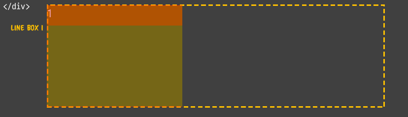
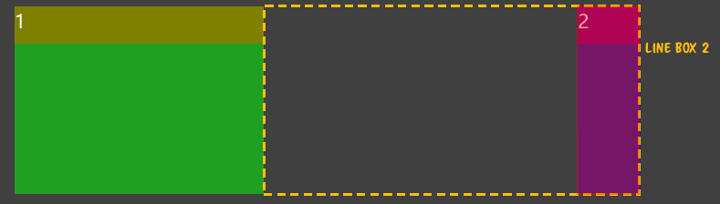
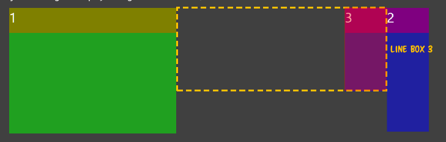
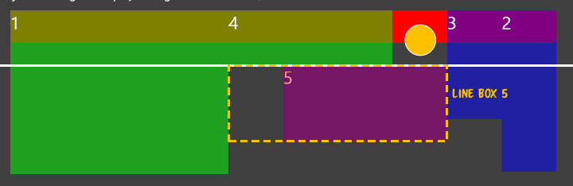
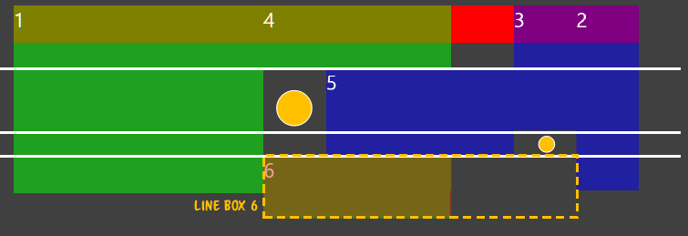
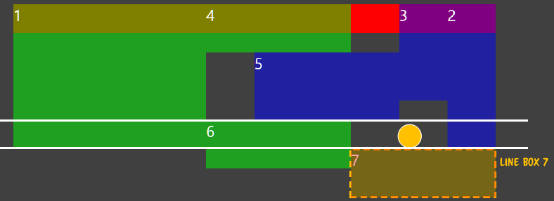
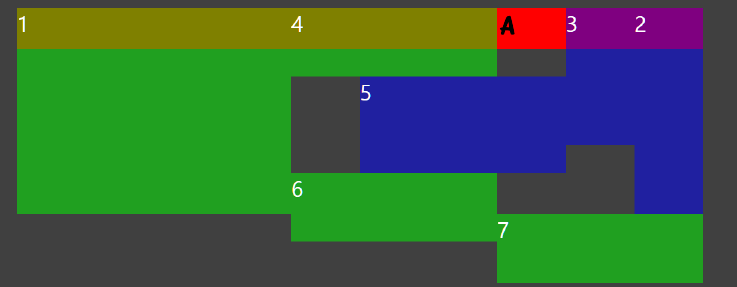
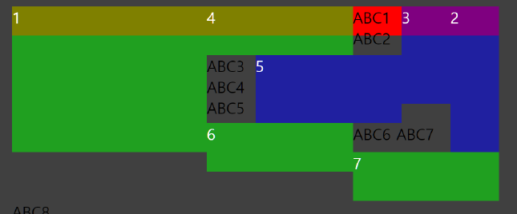

1강 CSS는 선언형 언어로, 선언형 언어는 많은 부분이 자동화되어 있다. 그래픽 시스템 일련의 메모리 공간에 점을 표현해서 그림을 그린다. 껐다 키는 식으로.. 점을 껐다 키는 비트로 되어 있는 것을 비트맵이라고 한다.
시간이 경과되고 점에 색상을 가지게 된다. 정식 용어로는 픽셀맵이라고 한다. 엄밀한 의미로 비트맵은 흑백만 가능한 것이지만 통상적으로는 그냥 비트맵이라고 한다. CSS에서 255까지인데 1바이트이다. 4바이트
체계는 32비트 트루칼라인 것이다. 16비트 칼라는 2바이트로 이것을 웹에서 쓰이기도 한다. 이 때는 사람은 녹색을 잘 인식하므로 녹색 영역을 크게 해서 한다. fixed number 그림을 그릴려면 x, y,
width, height, color 등의 값을 확정적으로 지정해줘야 한다. 이것을 fixed number 라고 한다. fixed number 체계로 만들면 문제가 발생할수 있다. 다양한 화면 크기에 대응할수
없다. screen size, chrome size(os에서 닫기 버튼등의 테두리), hierarchy가 영향을 끼칠수 없다. 숫자가 확정되어 있기 때문이다. abstract calculator %, left,
block. inline, float 등 계산을 추상화 시킨 방식이다. 이렇게 상대적인 단위를 쓰는 이유는 환경의 변화에 대응하기 위해서이다. 추상화되어 있는 계산, 방식을 통해서 그래픽을 표현한다. 환경에 반응할수
있는 페이지를 만들려면 추상화되어 있는 계산 방법을 이식해야 컴퓨터가 환경 변화에 따라 대신 계산해줘서 적응할수 있는 것이다. 따라서 우리는 계산식에 익숙해져야 할 필요가 있다. 그래야 여러 환경에서도 추상적인
길이로서 적용할 수 있기 때문이다. components 여러가지 추상적인 계산 체계를 합병해서 원하는 형태를 쉽게 쓸수 있도록 묶어놓은 것을 말한다. 다양한 컴포넌트를 이용해서 화면을 구성한다. framework
컴포넌트들이 일관성 있는 체계, 분류를 갖고 있다면 프레임워크라고 부른다. fixed number ==추상화==> abstract calculator ==포괄==> components ==추상화==>framework
추천방향 : 알아야 한다. 알고 쓰는 것은 그리 상관없다. CSS는 추상화되어 있는 체계를 지원한다. CSS의 추상적인 계상체계를 알아서 그것이 실제로 어떻게 동작하고 해석되는지 아는 것이다. Rendering
system 그래픽 시스템이 그림을 그린다고 한다면 렌더링 시스템은 무언가 그림하고 상관없는 것을 그림으로 표현하는 것이다. JSON 데이터를 가지고 그래프로 표현하는 것 이런 것을 렌더링이라고 한다. 그림을
위한 재료를 가지고 그림을 만들어 내는 행위이다. geometry calculate 그림을 그릴 영역을 나눈다. 즉 지오메트리를 계산한다. fragment fill 그 다음에 칠한다. 픽셀은 물리적인 한 점을
말한다. 지오메트리에 포함되어 있는 모든 픽셀을 지칭하는 단어로 프래그먼트라고 말한다. 프래그 먼트를 여러 색상으로 채워주면 된다. 현대 렌더링 시스템은 지오메트리를 계산하고 프래그먼트를 채워주는 과정을 기본적으로
한다. 리플로우 : 지오메트리를 계산하는 과정 리페인트 : 계산된 지오메트리에 색상을 칠하는 과정 되도록이면 리플로우를 최소화 하고 그게 안된다면 리페인트를 최소화 하라. 리플로우를 하면 다시 그 지오메트리에
따라서 리페인트를 해야 하기 때문에 비싼 작업이다. CSS에서는 지오메트리 속성을 이해하는게 더 어렵다. CSS specifications css의 본질은 무엇인가? 약속이다. css에서의 스펙은 w3c가 관리
했으나 지금은 html5 재단에서 관리를 한다. css level 1 css level2 css level2 + module css level2.1 이후부터는 css 레벨은 사라지고 모듈 레벨만 존재한다. 각각
모듈별 버전을 말하는게 정확하다. 향후 CSS는 모듈별로 따로 각각 개별적으로 발전하게 된다. 공부란 정확한 용어를 정확하게 설명할수 있어야 한다. 또한 왜 그런지를 설명할 줄 알아야 한다. Normal Flow
css2.1 visual formatting model -> nomal flow에 기술되어 있지만 추상적으로 되어 있다. 3가지 그래픽 렌더링 원리 block formatting contexts | inline
formatting context | relative positioning (BFC, IFC, RP) 어떻게 화면에 배치하고 어떻게 지오메트리를 만들지를 결정한다. position static(브라우저 기본값)
| relative | absolute | fixed | inherit 노멀플로우는 static, relative 속성을 가진 애들한테만 영향을 끼친다. 잠깐 DOM을 잊어버리자. 엘리먼트간의 관계를 생각하지
말고, 그것들을 그리는 시스템이 따로 있다고 생각하자. 실제로 따로 있고. Block Formatting Contexts div가 2개 만들면 2개가 블럭이라 BFC시스템 내에서 줄단위로 넣어준다. 이 줄의 근거는
부모의 크기이다. (정확히 말하자면 부모 블럭 요소의 크기) 각각의 x , y 값을 계산해서 지정해주고 자리잡아준다. 계산 원리. 블럭 엘리먼트의 y좌표는 그전 블럭 엘리먼트의 높이 값으로.. IFC 인라인 요소가
나타나면 IFC가 적용된다. 앞의 인라인 요소의 넓이를 더해준 값으로 그 다음 x좌표를 잡아준다. 너비를 넘어가면 그 다음 줄에 높이 반영해서 y좌표 잡아준다. 그 다음에 다시 블럭 요소가 나타나면 자기 BFC가
적용되는 것이다. 이거다가 CSS에서는 BFC를 새로 만들게 하는 행위가 있다. 화면이 그려지는 것은 BFC와 IFC의 조합으로 만들어진다.
BFC가 계산해서 파란거한테는 부모의 BFC길이를다 먹으라고 해준다. 빨간것은 설령 500px이라고 할지라도 BFC가 그 라인을 해당 블록 영역으로 잡았기 때문에 그 아래에 그려지게 되는 것이다.
aaaaaaaaaaaaaaaaaaaaaaaaaaaaaaaaaaaaaaaaaaaaaaaaaaaaaaaaaaaaa
aaaaaaaaaaaaaaaaa aaaaaaaaaaaaaaaaa aaaaaaaaa
div안에 아무것도 주지 않으면 overflow:auto 라고 되는데, 모든 브라우저의 오토값은 visible이다. overflow : visible 하에서는 자기의 크기와 상관없이 컨텐츠의 크기가 넘어가게 되면 본인의
크기가 늘리게 되어있다. 따라서 위에서는 a가 죽 넘어간다. 하지만 아래에서는 a가 끊어져 아래로 내려오게 된다. 왜 이렇게 되는 것일까? 그것은 텍스트 노드에 대한 별도 규정이 있다. 텍스트 노드에 포함되어
있는 공백문자가 있으면 거기에 걸리면 인라인 영역의 암묵적 영역으로 나눠준다. 따라서 각각의 aaaa는 일종의 엘리먼트가 되는 것이다. 즉 3개의 span태그가 되는 것이다. IFC는 경계면이 되면 다음줄로
내리는 로직이 있는 것이다. 위의 aaa... 를 적절히 끊을려면 work breaking을 걸면되는데, 모든 문자에 대해서 하나의 span으로 동작하도록 IFC의 알고리즘을 변경해주는 것이다. 그래서
그 영역에 걸리는 문자열을 알아서 끊어서 내리는 것이다.
(IFC 시작)HELLO
WORLD (IFC 끗 BFC시작되어 아래에 위치)
divdiv
!!!!!
그림을 그리는 것은 돔구조와 상관없이 별도의 규칙으로 그려진다. BFC시작, IFC시작했다가 종료하고 다시 BFC에 적용하면서 부모 블록 요소의 길이를 받아와서 보여진다. 그뒤에 다시 IFC 시작.
**
HELLO
WORLD (여기까지 IFC)
BFC적용
!!!(IFC)
BFC적용
**(IFC)
부모중 블럭 요소의 크기를 가져와서 적용된다.
RP 적용 position:relative를 적용한다. 이 의미는 원래는 static인데 static으로 그리고 나서, 그 노멀플로우 위치에서 상대적으로 위치를 얼마 줄것이라는 의미이다.
**
HELLO
WORLD (여기까지 IFC)
BFC적용
!!!(IFC)
BFC적용
**(IFC)
RP의 의미는 노멀플로우 주고 거기에 상대적인 값을 적용한다는 의미이다.
즉 span 안의 것들이 relative가 되면서 노멀플로우로 먼저 계산한 다음에
그 이후 이 영역에 대해서만 다시 처리를 한 것이다.
여기까지가 노멀플로우의 기본이다.
이 것을 가정하고 응용버전의 스펙을 살펴볼 것이다.
FLOAT
FLOAT에 적용할 수 있는 4가지 값 : left | right | none | inherit
FLOAT를 설정하게 되면 새로운 BFC가 생성된다.
플로트를 하게 되면 이 부분만 떠있게 된다. (FLOAT over normal flow)
하지만 떠있음에도 IFC에는 영향을 끼친다. IFC의 가이드 역할을 하게 되어서
FLOAT있는 자리에는 들어갈수 없게 된다.
플로트는 노멀플로우로 그려지는것이 아니다. 플로트 끼리는 Line Box라는 원리로
서로간의 위치를 잡고 그려지게 된다.
즉 플로트는 노멀플로우에서 벗어나서 둥둥 뜬상태로 라이 박스라는 원리로 그려지게 되는 것이다.
1번 div에서 BFC가 존재하고
2번 div에서 새로운 BFC가 생성되는 것이다.
HELLO(IFC, float 가이드 영향 받음)
WORLD
!!!(IFC, float 가이드 영향 받음)
플로트는 IFC의 인라인 배치에 영향을 끼친다.
플로트는 노멀플로우에서는 떠있고 인라인이 x좌표 계산할때는 가이드로 동작한다.
따라서 플로트 안쪽에 인라인 요소를 그릴수가 없다.
1
2
3
4
5
6
7
ABC1 ABC2 ABC3 ABC4 ABC5 ABC6 ABC7 ABC8

첫번째를 그리면 이렇게 그려지는데, 본인이 바라보는 라인박스는
이 영역전체 이다. 이 영역 전체에 아무런 플로트 박스가 없어서 이 박스 안에서
제일 왼쪽에 영역을 차지해서 자기 높이만큼 라인 박스가 확보되는 것을 보고
확보되니 들어간 것이다.

라인 박스를 오른쪽에 그릴려고 봤는데, 이미 또다른 플로트가 있는 것을 보고
영역만큼만 잘라서 쓸수 있는 라인 박스를 잡는다. 그 다음 세로, 가로 높이를
잡아 보고 그 안에 들어가지는 확인한 다음에 들어온 것이다.

이미 좌측, 우측에 영역이 잡혀잇는 것을 본다음에 그 사이에 자신이 들어갈 수 있는
높이, 가로 길이를 체크한 다음에 들어갈수 있다는 것을 알수 있다면 그안에 들어가는 것이다.
라인 박스 이론은 계속해서 계산해서 들어갈수 잇는 지 확인 하고 못들어가면 다른 라인
박스를 찾아야 한다.

5번째 박스는 왜 저기에 그려졌는가?
기존의 라인 박스의 탑라인이 저기 였는데, 그만큼의 가로길이, 세로길이 확보가 되지
않는다. 그래서 탑라인을 낮추었더니 걸리는 경계면이 지금의 경계면이다.
지금 베이스 라인을 보앗을때 노란색 dashed 선 영역인 것이다.
라인 박스에서 중요한 것은 탑라인의 기준점이 어디까지 내려왓는지가 중요하다.
이미 이 라인에서 못그리게 되면 내려서 첫번째 그려질수 잇는 영역까지 내려온 다음에
라인박스를 잡는 것이다.

탑라인 여역 기준으로 봤을때 가로가 그려질수 없으므로 못들어간다. 그래서 내린다.
그래서 지금의 영역에 걸리게 된다. 지금의 영역에서 라인 박스를 잡고 들어온것이다.

탑라인은 한번 내리면 끝이다. 다시 올라가지 않는다. 내려온 그 지점부터
라인 박스를 잡는다. 6번 라인에서부터 탑라인을 잡아서 내려왔다.
하지만 왼쪽도 비었는데 왜 오른쪽에 그려졌는가?
float left이기 때문이다. left가 이미 이렇게 전진해있는 상황이기 때문에
그 지점으로부터 그려진 것이다. 이것이 라인 박스 이론이다. float는 라인 박스를 통해서
배치가 된다.

빨간 박스는 뭐다? 다른 것들은 BFC로부터 float요소라서 무시되고 BFC로부터 첫번째 블록 요소가
빨간 박스인 것이다. 빨간 박스에 A를 쓰면 해당 영역에 쓰인다. 다른 요소들이
다 가드를 치고 있으니 나머지 영역인 영역에 A가 쓰여지는 것이다.

블록박스에 대한 가드로 내려온 것이 아니다. float 라인 박스에 의해서 내려왔다.
IFC로 내려 갈때에는 블록 경계면에 의해서 IFC가 내려오는 경우가 있고,
IFC가 내리긴 했지만 float 가드에 의해서 내려오게 된 것이 있다.
이것은 후자이다. float가드에 의해서 내려갈 때에는 해당하는 요소를 포함한 부모의
크기를 늘리지 않는다. 일반적인 블록 가드에 의해서였으면 빨간색 영역이 커졌을 것이다.
하지만 float가드에 의한 것이기 때문에 빨간 영역이 늘어나지는 않았다.
계속해서 float 가드에 의해서 계속 내려 간다.
ABC6가 위치한 곳은, 그 위의 빈공간에 들어가지는 못한다.
인라인은 연속된 공간에 그려져야 한다. 또한 IFC는 베이스 라인을 내려버린 것이다.
그래서 채울수가 없으며 다음 밑의 공간에 채워진 것이다. 그다음에는 내릴려고 하다보니
어느곳에 채울수가 없었기 때문에 제일 마지막 영역인 ABC8은 맨 아래쪽으로 내려간 것이다.